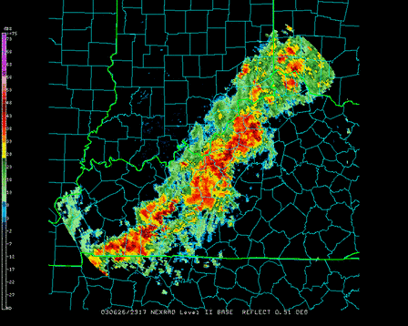
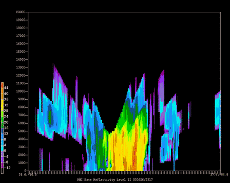

GEMPAK / N-AWIPS
NEXRAD Level II Examples
Level II NEXRAD data is available via the IDD through the CRAFT feedtype and
can be stored for GEMPAK display from the LDM.
The program GPNEXR2 allows the selection of the tilt level and parameter to
be displayed in a PPI display while the program NEXR2RHI creates a vertical cross section
of a parameter along a user specified axis.
NEXRAD Level II Base Reflectivity scan display using GPNEXR2

NEXRAD Level II Reflectivity vertical cross section display using NEXR2RHI

Further examples of GEMPAK products can be found
here.